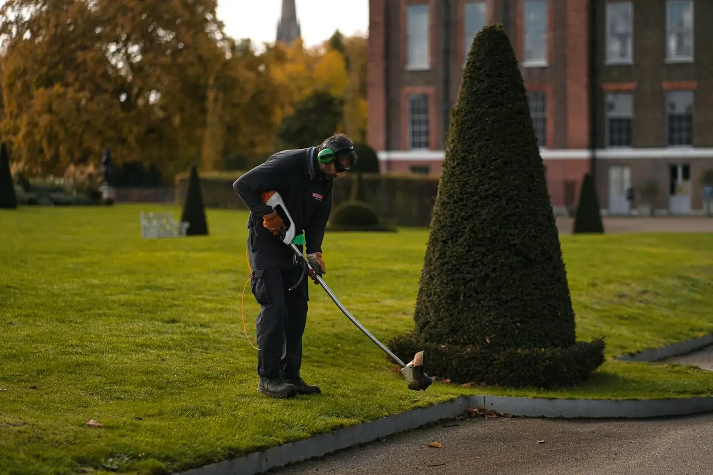
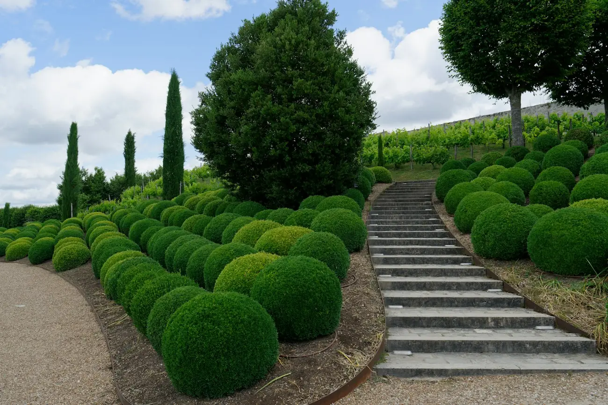
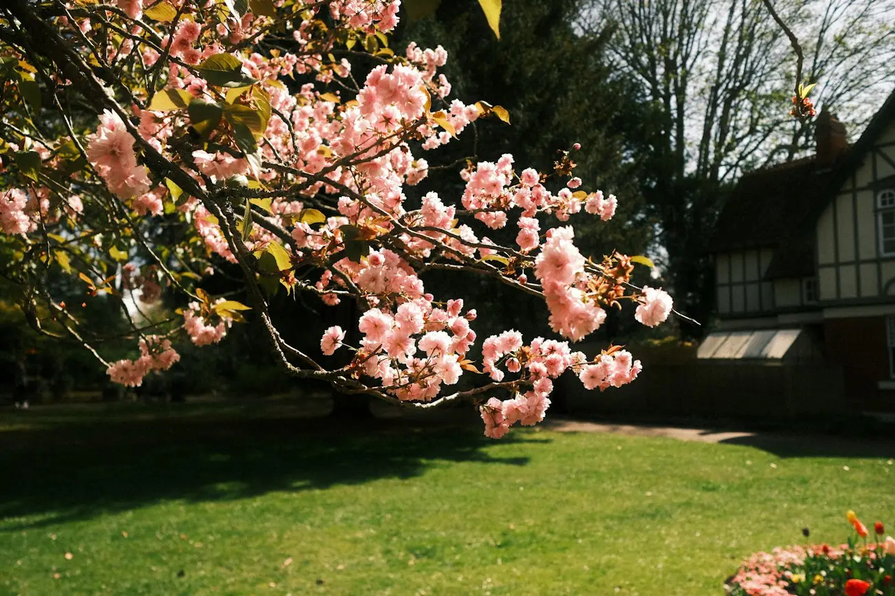
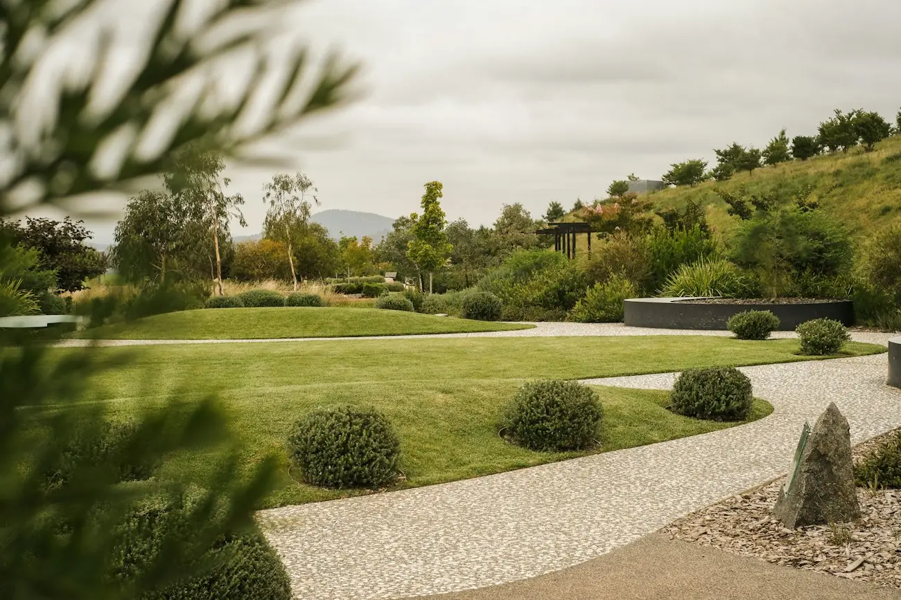

Pflege und Schnitt
Rasen mähen, Hecken und Formgehölze schneiden, Beete in Ordnung halten. Einmalig oder regelmäßig übers ganze Jahr, Schnittgut nehmen wir mit.

Wir legen Gärten an und halten sie in Form. In {{ort}} und Umgebung.
{{hero_knopf}}Sie sagen, was Sie sich wünschen. Wir kommen vorbei, sehen uns alles an und nennen einen festen Preis.

Rasen mähen, Hecken und Formgehölze schneiden, Beete in Ordnung halten. Einmalig oder regelmäßig übers ganze Jahr, Schnittgut nehmen wir mit.

Planung, Bodenvorbereitung und Bepflanzung für Gärten, die neu entstehen oder ein neues Gesicht bekommen. Rollrasen oder Aussaat, auf Wunsch mit Bewässerung.

Pflaster, Platten, Stufen und Einfassungen, sauber verlegt auf tragfähigem Unterbau. Damit der Sitzplatz auch nach zehn Wintern noch eben liegt.
Rückschnitt und Fällung, einschließlich Abtransport.
Aufbau und Reparatur von Zäunen, Toren und Sichtschutz.
Laub entfernen und den Garten winterfest machen.



Beispielbilder. Hier stehen später Fotos Ihrer eigenen Projekte.
{{kontakt_text}}
{{kontakt_nummer}} {{name}}